Flexible Number of Transmission Routes and accounting for date uncertainty in Serial Interval Estimation
Simon Carreel
2026-05-28
Source:vignettes/articles/presentation_changes_to_the_original_code.Rmd
presentation_changes_to_the_original_code.RmdIntroduction — Why does the serial interval matter?
The serial interval (SI) is defined as the time elapsed between symptom onset in a primary case (the infector) and symptom onset in the secondary case they directly infected (Vink, Bootsma, and Wallinga 2014).
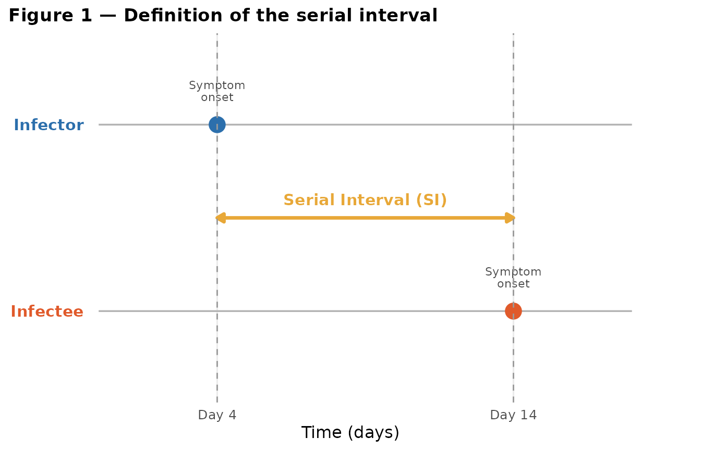
Figure 1 — Definition of the serial interval
In epidemiology, the serial interval is a fundamental parameter for several reasons:
- Quantifying the speed of spread. A short SI means that successive generations of cases follow one another rapidly, making the epidemic harder to contain. A long SI leaves more time to detect and isolate cases before they transmit further.
- Estimating the reproduction number. Both the basic reproduction number and the time-varying reproduction number are linked to the SI through the renewal equation: without an accurate SI estimate, any estimate of will be biased.
- Calibrating transmission models. Compartmental models (SIR, SEIR, etc.) and renewal equation models use the SI as a direct input to simulate epidemic dynamics and evaluate the impact of interventions.
- Designing control measures. The duration of quarantine, the contact-tracing window, and the timing of vaccination campaigns are all partly calibrated on the SI.
In practice, the SI is often confused with the generation interval (the time between infection of the primary case and infection of the secondary case).
How is the serial interval estimated?
Data requirements
Ideally, one would have transmission pairs (infector, infectee) identified with certainty through epidemiological investigation or genomic sequencing. In that setting, the SI is estimated directly as the difference in symptom onset dates.
In practice, such data are rare. The most common alternatives are:
| Approach | Data required | Main sources of bias |
|---|---|---|
| Direct infector–infectee pairs | Contact-tracing surveys | Epidemic growth bias, right-truncation |
| Outbreak data (ICC intervals) | Symptom onset dates within a household | Multiple transmission routes (see §3) |
| Bayesian reconstruction | Partial transmission tree | Strongly prior-dependent |
Classical biases and corrections
Several biases affect SI estimation from observed data:
- Epidemic growth bias. During epidemic growth, infector–infectee pairs with short SIs are over-represented in surveillance data, because recent infectors are more likely to still be under observation.
- Right-truncation. Secondary cases whose symptoms appear after the study end date are not observed, artificially shortening the estimated SI.
- Negative serial intervals. When the secondary case develops symptoms before the identified infector (pre-symptomatic transmission), the observed SI is negative.
These corrections are well documented in the literature but require additional assumptions. It is precisely to sidestep some of these difficulties that household-based ICC methods were developed.
Date reporting uncertainty
A less-discussed but practically important source of bias in serial interval estimation concerns the accuracy of the reported symptom onset date. In many surveillance systems, the date recorded in the database is not the true date of symptom onset, but rather the date at which the case was reported to the health authorities.
Several mechanisms can introduce this discrepancy:
- Weekly reporting cycles. In some institutional settings (care homes, schools), health authorities collect information only once a week. A person who developed symptoms on a Wednesday may only be recorded on the following Monday, introducing an error of up to 6 days.
- No weekend reporting. Some surveillance systems do not register new cases on Saturdays and Sundays. Cases with symptom onset on Friday evening or Saturday will systematically be reported on the following Monday.
- Grouped declaration. Physicians or hospitals sometimes submit batches of cases at fixed intervals, leading to artificial clustering of reported onset dates.
The consequence for ICC interval estimation is that the observed ICC is not , but rather , which can differ from the true value by up to days (if both the index and the secondary case are subject to reporting delays in opposite directions).
The mitey package addresses this through the
wind parameter (reporting window),
described in detail in Section 4.
The Vink et al. method
ICC data (Index Case-to-Case intervals)
In a household or institutional setting (care home, school classroom), the index case — the first person to show symptoms — is identified, and the symptom onset date of every other case is recorded. The difference between the index case onset date and each subsequent case onset date is an ICC interval.
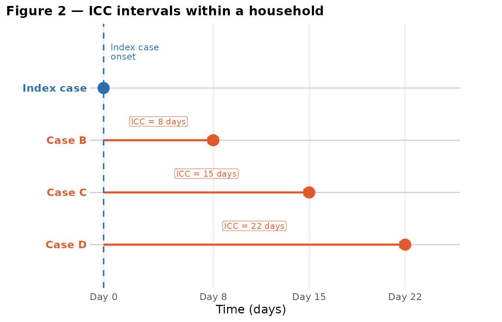
The appeal of ICC data is their availability: they do not require identifying exactly who infected whom, only that symptom onset dates are recorded within a well-defined group.
The mixture model: transmission routes
The key insight of Vink et al. is that each observed ICC can correspond to several distinct transmission scenarios, called routes:
- Co-primary (CP): Both the index case and the observed case were infected by the same external source at roughly the same time. The ICC reflects variability in incubation, not the SI. Expected distribution: half-normal centred at zero.
- Primary-Secondary (PS): The index case directly infected the observed case. ICC ≈ SI. Distribution: .
- Primary-Tertiary (PT): The index case infected an asymptomatic intermediate, who then infected the observed case. ICC ≈ 2 × SI. Distribution: .
- Primary-Quaternary (PQ): Two asymptomatic intermediates between the index case and the observed case. ICC ≈ 3 × SI. Distribution: .
#> Warning: Removed 36 rows containing non-finite outside the scale range
#> (`stat_align()`).
#> Warning: Removed 36 rows containing missing values or values outside the scale range
#> (`geom_line()`).
#> Warning: Removed 36 rows containing non-finite outside the scale range
#> (`stat_align()`).
#> Warning: Removed 36 rows containing missing values or values outside the scale range
#> (`geom_line()`).
#> Warning: Removed 36 rows containing non-finite outside the scale range
#> (`stat_align()`).
#> Warning: Removed 36 rows containing missing values or values outside the scale range
#> (`geom_line()`).
#> Warning: Removed 36 rows containing non-finite outside the scale range
#> (`stat_align()`).
#> Warning: Removed 36 rows containing missing values or values outside the scale range
#> (`geom_line()`).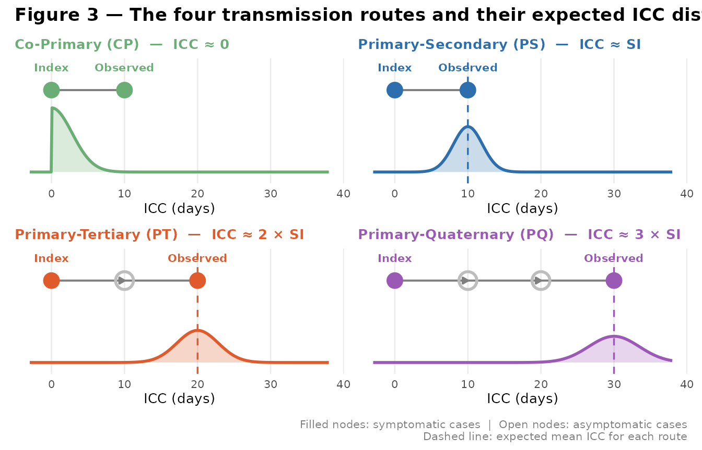
The observed ICC density is therefore a mixture of these components:
where the are the route weights (with ), and , are the underlying SI parameters to be estimated.
The EM algorithm
The parameters are estimated using an Expectation-Maximisation (EM) algorithm:
- E-step. For each observation , compute the posterior probability that it belongs to each transmission route.
- M-step. Update and by maximising the weighted likelihood, and recompute the weights .
These two steps are repeated until convergence. For further technical
details, refer to the Quick Start Guide vignette of the
mitey package and to Vink, Bootsma,
and Wallinga (2014).
# Basic estimation with 4 routes (default behaviour)
result <- si_estim(icc_data, dist = "normal", n_routes = 4)
result$mean # Estimated mean serial interval (days)
result$sd # Estimated standard deviation (days)Accounting for symptom onset date uncertainty
The problem
The original Vink et al. method assumes that the reported symptom onset date is exact. Under this assumption, the likelihood of an observed ICC value is computed by integrating the component densities over the unit interval (or when ), reflecting only the rounding to the nearest integer day.
In practice, however, the reported date may be off by several days. If a surveillance system collects data once a week, any ICC value computed from these dates carries an uncertainty of up to days around the true value.
#> Warning: `geom_errorbarh()` was deprecated in ggplot2 4.0.0.
#> ℹ Please use the `orientation` argument of `geom_errorbar()` instead.
#> This warning is displayed once per session.
#> Call `lifecycle::last_lifecycle_warnings()` to see where this warning was
#> generated.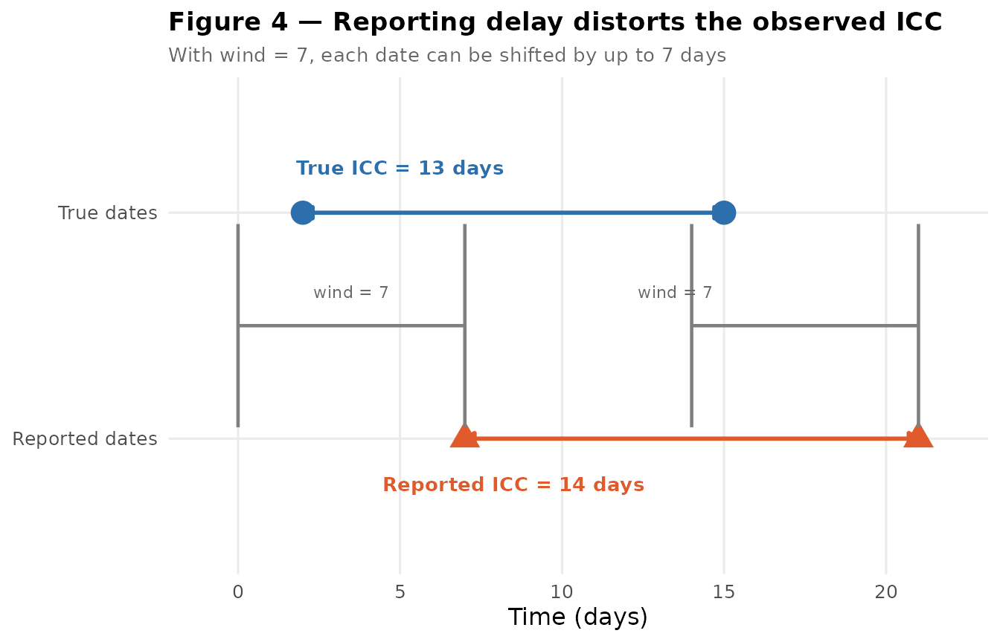
Figure X — Illustration of the reporting window
A worked example: weekday-only recording
As a concrete illustration, suppose the index case has a symptom onset drawn uniformly between day 1 and day 14, and the secondary case develops symptoms a number of days later drawn from a normal distribution with mean and standard deviation . Under daily recording, the ICC interval exactly follows this normal distribution. Under weekday-only recording, onset dates falling on weekends are pushed forward to the next Monday, distorting both the marginal distributions of and and, crucially, the distribution of their difference.
library(extraDistr)
N <- 1000
mu <- 22
sigma <- 3
# P1: index case onset, uniformly distributed between day 1 and 14
P1 <- rdunif(n = N, min = 1, max = 14)
# norm: true serial interval drawn from a normal distribution
norm <- trunc(rnorm(n = N, mean = mu, sd = sigma))
# P2: secondary case onset
P2 <- P1 + norm
# I: true ICC interval
ICC <- P2 - P1
breaks1 <- seq(0.5, 15.5, 1)
par(mfrow = c(1, 3))
hist(P1, main = "P1: index case onset\n(Uniform)", xlab = "Days",
col = "skyblue", breaks = breaks1)
hist(P2, main = "P2: secondary case onset\n(P1 + SI)", xlab = "Days",
col = "lightgreen")
hist(ICC, main = "True ICC interval\n(I = P2 - P1)", xlab = "Days",
col = "cyan")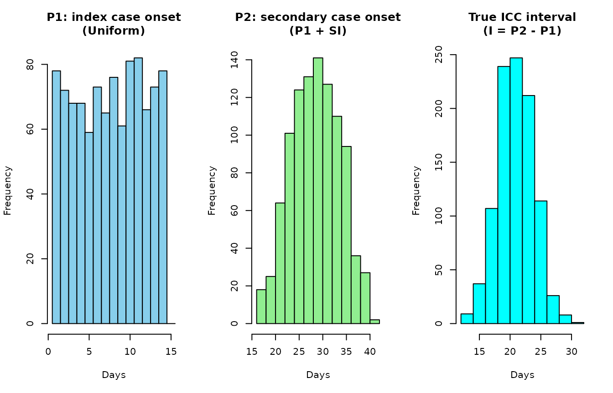
Now suppose that symptom onset dates are only recorded on weekdays. Dates falling on a Saturday (day ) or Sunday (day ) are instead recorded on the following Monday. This shifts and forward by up to two days, and the resulting observed ICC interval can differ substantially from the true interval .
# Shift weekend dates to the following Monday
shift_to_weekday <- function(x) {
remainder <- x %% 7
ifelse(remainder == 0 & x > 3, x + 1,
ifelse(remainder == 6 & x > 3, x + 2, x))
}
P1_prime <- shift_to_weekday(P1)
P2_prime <- shift_to_weekday(P2)
ICC_prime <- P2_prime - P1_prime
par(mfrow = c(1, 3))
hist(P1_prime, main = "P1': recorded onset\n(weekdays only)", xlab = "Days",
col = "skyblue", breaks = breaks1)
hist(P2_prime, main = "P2': recorded onset\n(weekdays only)", xlab = "Days",
col = "lightgreen")
hist(ICC_prime, main = "Observed ICC interval\n(I' = P2' - P1')", xlab = "Days",
col = "cyan")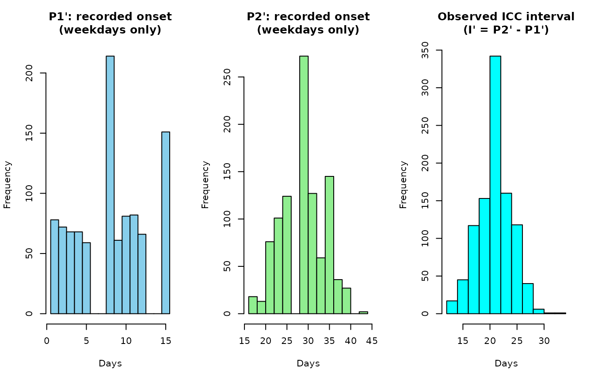
Comparing the two distributions makes the problem clear: the weekday
recording rule creates gaps and spikes in the observed ICC distribution
that have nothing to do with the underlying biology. Feeding these
shifted intervals directly into si_estim() without
correction will bias the estimates of
and
.
Idea
Instead of treating each observed value
as a point observation, mitey treats it as the
centre of an uncertainty window of width
wind. The true ICC interval is assumed to lie somewhere in
,
with probability decreasing as we move away from
.
The likelihood contribution of observation is therefore not simply but the weighted integral of the serial interval density over the window:
where is a triangular weight function centred at , equal to 1 at and falling linearly to 0 at .
Why a triangular weight?
If both and can each fall uniformly within a window of width around their recorded date, the difference follows a triangular distribution on around the true difference. The triangular weight function directly reflects this uncertainty structure.
The default value wind = 1 recovers the original Vink et
al. behaviour exactly.
Usage
The wind parameter is available in
si_estim(), and is automatically forwarded to all internal
integration functions.
# Default behaviour (wind = 1): exact date assumed
result_default <- si_estim(
dat = icc_data,
dist = "normal",
wind = 1 # default — equivalent to original Vink method
)
# Weekly reporting cycle (wind = 7)
result_wind7 <- si_estim(
dat = icc_data,
dist = "normal",
wind = 7
)
# No weekend reporting (wind = 2)
result_wind2 <- si_estim(
dat = icc_data,
dist = "normal",
wind = 2
)As a rule of thumb:
| Surveillance system | Recommended wind
|
|---|---|
| Daily reporting, exact date | 1 (default) |
| No weekend reporting | 2–3 |
| Twice-weekly reporting | 3–4 |
| Weekly reporting | 7 |
| Bi-weekly reporting | 14 |
The key limitation: an arbitrarily fixed number of routes
The problem
In the original formulation of Vink et al., the number of transmission routes is fixed at four (CP, PS, PT, PQ). This choice is reasonable for many common infectious diseases, where it is unlikely to observe more than two or three asymptomatic intermediates between the index case and the observed case.
However, this choice is arbitrary and can be ill-suited in two contrasting situations.
Highly asymptomatic diseases: the risk of underestimating the number of routes
For some diseases, a substantial fraction of infections remains asymptomatic. A notable example is scabies (Sarcoptes scabiei), for which the incubation period can last several weeks, and infested individuals can be contagious without showing any visible symptoms for a long time.
In this context, long transmission chains are plausible: the index case may have infected one asymptomatic intermediate, who infected another, who infected yet another, before the observed case finally shows symptoms.

If such long chains are frequent but the algorithm is limited to 4 routes, the PT or PQ component will absorb ICC values that actually correspond to routes of order 5 or 6. This leads to overestimation of the SI, because the algorithm assigns an ICC of to the component centred at .
Highly symptomatic diseases: the risk of over-parameterisation
Conversely, for a disease where almost all infections are symptomatic (e.g. measles or smallpox), it is unlikely that several asymptomatic intermediates follow one another in a single transmission chain. In this case, modelling 4 routes introduces unnecessary parameters (the weights for PT and PQ routes will be estimated near zero), at the cost of precision and numerical stability of the EM algorithm.
A model with only 2 or 3 routes would be more parsimonious and would yield more stable estimates.
Summary
| Context | Examples | Recommended routes | Risk if too low | Risk if too high |
|---|---|---|---|---|
| Highly asymptomatic disease | Hepatitis A | ≥ 5 – 8 | Overestimation of the SI | – |
| Moderately asymptomatic disease | Influenza | 3 – 5 (default = 4) | Low | Low |
| Highly symptomatic disease | Measles, smallpox | 2 – 3 | – | Over-parameterisation, instability |
The new feature: n_routes as a user parameter
Principle
The central modification brought to mitey is to
expose the number of transmission routes as an explicit
parameter of si_estim(), rather than hard-coding
it to 4. The user can now specify any integer
.
The default value remains n_routes = 4 to ensure
backward compatibility with the original behaviour.
What changed in the code
The change affects several functions in a consistent way:
| Function | Role | Modification |
|---|---|---|
si_estim() |
Main estimation function |
n_routes and wind parameters added |
f_norm() |
Mixture density (normal distribution) | Adapted for components |
f_gam() |
Mixture density (gamma distribution) | Adapted for components |
f0() |
Zero-ICC component density | Integration bound extended to wind
|
flower() |
Lower-bound component density | Integration bound extended to wind
|
fupper() |
Upper-bound component density | Integration bound extended to wind
|
integrate_component() |
Numerical integration per component | Bounds adapted to wind
|
integrate_components_wrapper() |
Integration across all components |
n_routes and wind forwarded |
plot_si_fit() |
Fitted distribution visualisation | Adapted for components |
plot_si_fit_result() |
Visualisation wrapper |
n_routes forwarded |
compare_n_routes() |
Model comparison across route counts |
wind forwarded to si_estim()
|
The component numbering logic is as follows (normal distribution):
- Component 1: Co-Primary route (half-normal)
- Components and for : positive and negative routes for transmission route
For the gamma distribution (which only produces positive values), only even components are used, giving components in total.
Updated function signatures
# Estimation with a custom number of routes
result <- si_estim(
dat = icc_data,
dist = "normal", # or "gamma"
n_routes = 6L # desired number of routes (default: 4)
)
# Direct visualisation of the result
plot_si_fit_result(result, dat = icc_data, dist = "normal")The function returns the same fields as before, with two additions:
-
n_routes: the number of routes used (useful for traceability) -
loglik: the log-likelihood of the fitted model (useful for model comparison, see §7)
Choosing the right number of routes:
compare_n_routes()
Model comparison principle
Increasing the number of routes is more likely to improve the fit to the data (the log-likelihood can only increase or stay the same), but at the cost of greater complexity. A penalised criterion is therefore needed to find the right balance.
The package implements two classical criteria:
where is the log-likelihood, the number of free parameters, and the sample size. The BIC penalises complexity more heavily and therefore favours more parsimonious models — it is generally recommended for selecting the number of components in a mixture model.
The number of free parameters is: - Normal distribution: (2 for and , plus the free weights) - Gamma distribution:
The compare_n_routes() function
# Compare models from 2 to 8 routes
comparison <- compare_n_routes(
dat = icc_data,
n_routes_max = 8L,
dist = "normal",
n = 50 # number of EM iterations per model
)The function returns a summary table and automatically displays the
fitted distribution plots for each value of n_routes
tested:
# Structure of the output
# n_routes | mu | sigma | loglik | aic | bic | n_params | converged | iterations
# 2 | ... | ... | ... | ... | ... | ... | TRUE | ...
# 3 | ... | ... | ... | ... | ... | ... | TRUE | ...
# ...Starting heuristics: n_optimal1(),
n_optimal2()
Two simple data-driven heuristics are available to guide the initial
choice of n_routes_max:
# Heuristic 1: based on the 95th percentile and the mean
n_optimal1(icc_data) # as.integer(quantile(dat, 0.95) / mean(dat))
# Heuristic 2: based on the relative range
n_optimal2(icc_data) # as.integer(max(dat) / sd(dat))These heuristics are not rigorous estimators but reasonable
starting points for exploring the n_routes
grid. It is recommended to use them to set n_routes_max in
compare_n_routes(), and then rely on AIC/BIC for the final
selection.
Applied examples
Example 1 — Highly asymptomatic disease (simulated data)
We simulate a disease with a high probability of asymptomatic infection. This results in ICC values that may correspond to long transmission chains: some observed ICCs are 5× or 6× the true SI.
#> === Simulation summary ===
#> N observations : 300
#> True SI mean : 10 days
#> True SI sd : 2 days
#> ICC range : 0 to 61 days
#> ICC mean : 20.89 days
#> Observations per route:
#> CP PS PT PQ R5 R6
#> 30 102 69 39 36 24
The original code with 4 routes will find a density function as below.
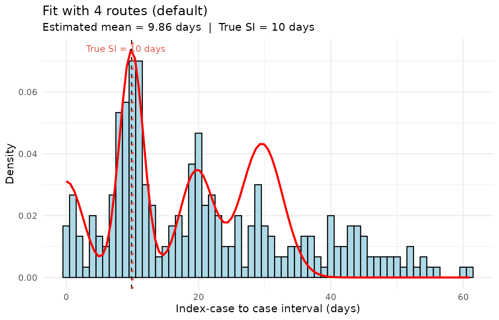
The fourth route looks overestimated, which is because all the ICC intervals whose values are greater than are assigned by the algorithm to the fourth route. This increases the fourth route weight.
The compare_n_routes used below shows how setting the number of routes helps the algorithm capture the distribution.
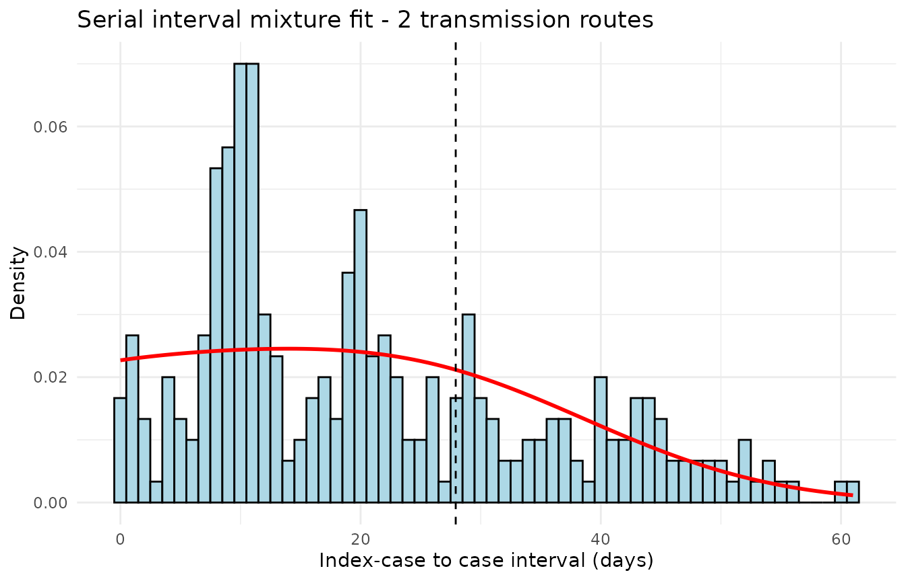
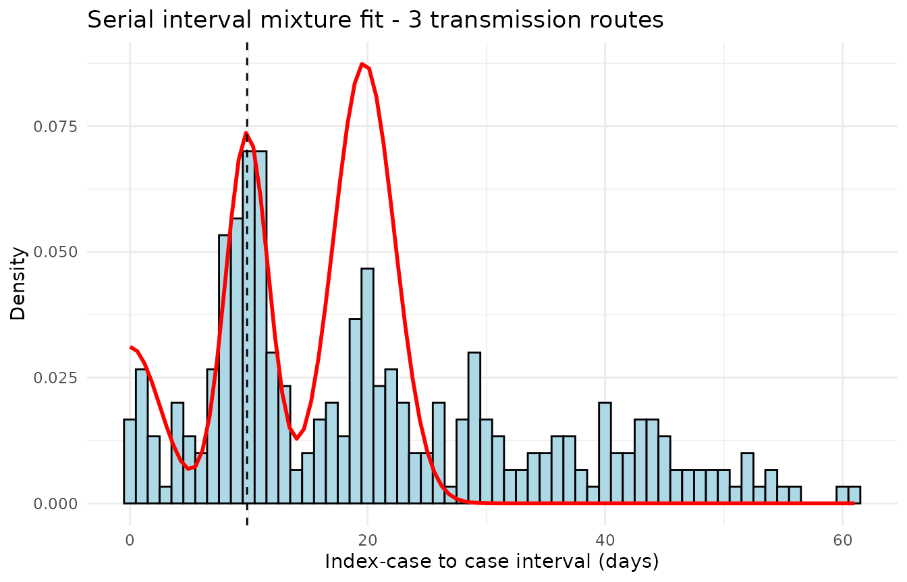
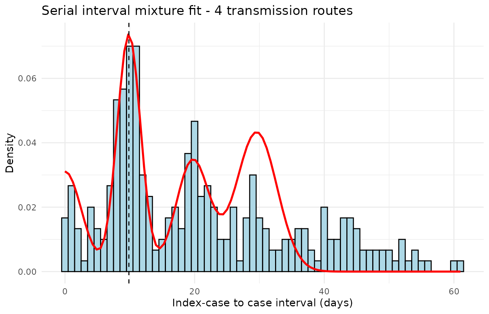
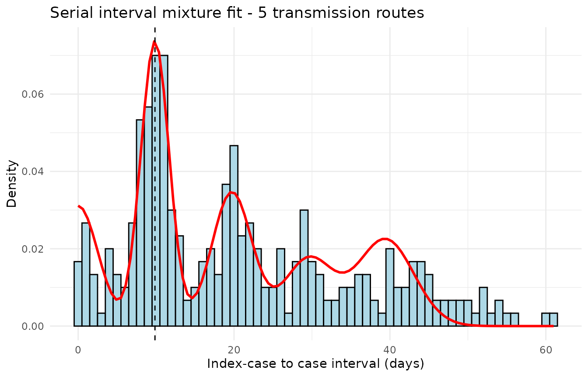
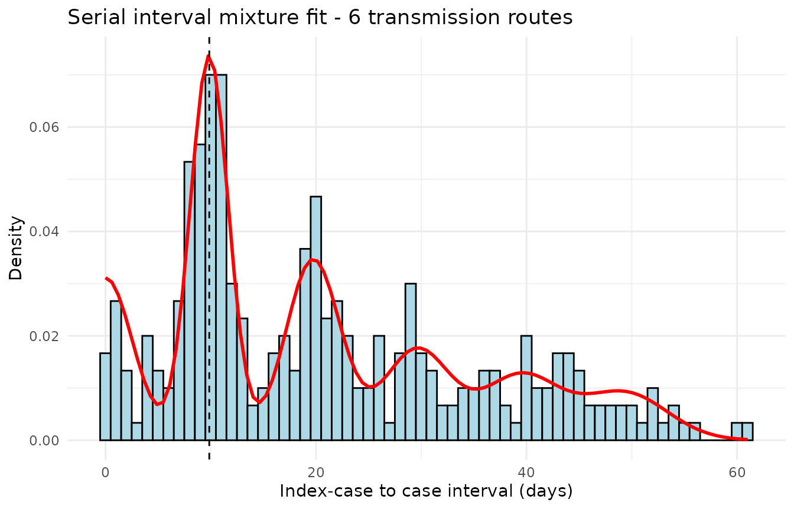
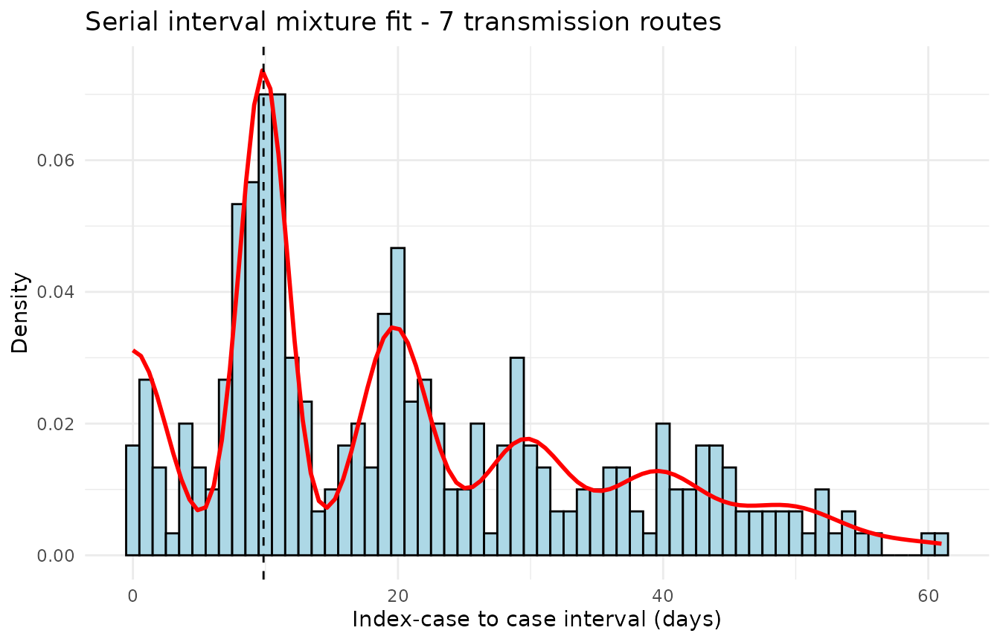
#> === Comparison of the n_routes ===
#> n_routes mu sigma loglik aic bic n_params converged iterations
#> 1 2 27.920 14.372 -1195 2398 2412 4 TRUE 17
#> 2 3 9.856 1.816 -4043 8098 8121 6 TRUE 43
#> 3 4 9.856 1.816 -1782 3580 3610 8 TRUE 32
#> 4 5 9.856 1.816 -1227 2474 2511 10 TRUE 31
#> 5 6 9.856 1.816 -1147 2318 2363 12 TRUE 31
#> 6 7 9.856 1.816 -1147 2321 2373 14 TRUE 30
#>
#> Best n_routes according to BIC : 6
#> Best n_routes according to AIC : 6These graphs show how increasing the number of routes has splitted all ICC intervals in the right component they belong to.
Example 2 — Highly symptomatic disease (simulated data)
We now simulate a disease where almost all cases are symptomatic: long routes (PT, PQ) are very rare.
#> True SI mean : 20 days
#> N observations : 300
#> ICC range : 0 to 30 days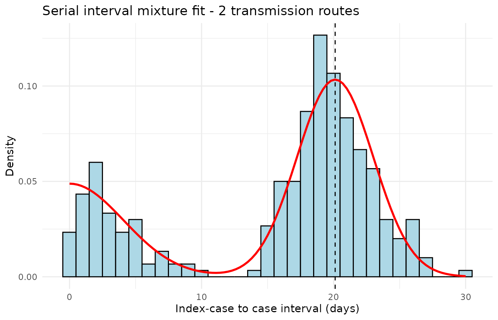
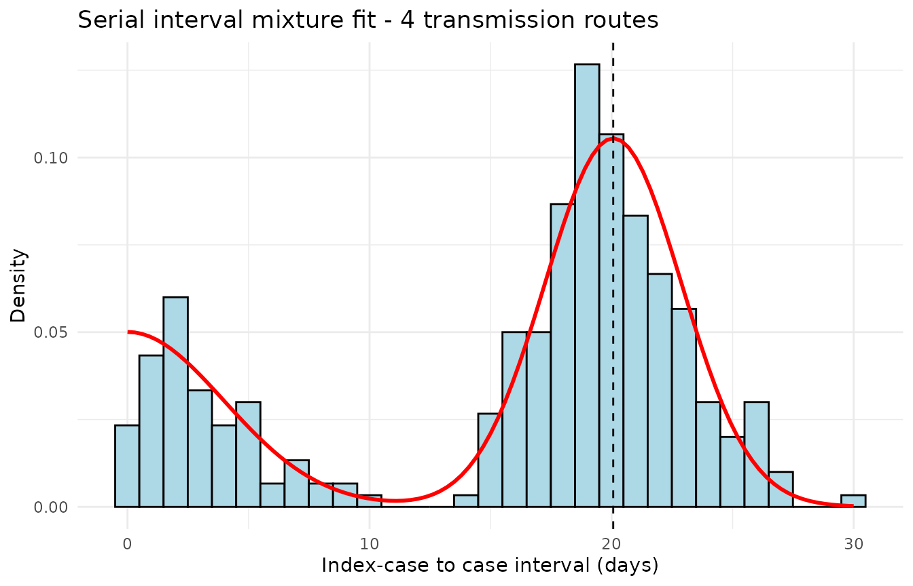
#> === Comparison of the n_routes ===
#> n_routes mu sigma loglik aic bic n_params converged iterations
#> 1 2 20.12 2.893 -883.8 1776 1790 4 TRUE 6
#> 2 3 20.07 2.820 -884.9 1782 1804 6 TRUE 7
#> 3 4 20.07 2.820 -884.9 1786 1815 8 TRUE 7
#>
#> Best n_routes according to BIC : 2
#> Best n_routes according to AIC : 2The example above shows us that the initial algorithm is robust to the case where the number of routes set in the algorithm is greater that the number of actual routes. Then, the algorihm will find weights close to 0.
Example 3 — Example with real outbreak data - Influenza in Canada
We now run the simulation using real outbreak data and compare the results from 4 to 8 routes.
The example below uses the data from outbreak of Influenza A(H1N1)pdm09 in the study from Savage, in 2011 in Canada.
#> === 4 routes ===
#> Estimated mean : 2.84 days
#> Estimated sd : 0.76 days
#> Converged : TRUE
#> Component weights:
#> [1] 0.238 0.444 0.000 0.180 0.000 0.139 0.000
In the original version of the algorithm, the ICC intervals whose values are greater than are captured by the fourth route.
With the new version of the algorithm, those last value are well captured by the 8 routes : the weight for the fourth route has decreased, and the ICC intervals are splitted in the route they belong to.
#> === 8 routes ===
#> Estimated mean : 2.84 days
#> Estimated sd : 0.76 days
#> Converged : TRUE
#> Component weights:
#> [1] 0.238 0.444 0.000 0.179 0.000 0.060 0.000 0.010 0.000 0.022 0.000 0.027
#> [13] 0.000 0.019 0.000
Example 4 — Example with real outbreak data - Pertussis in Netherlands
Using the dataset from a pertussis outbreak in Netherlands, from Greeff’s study in 2010, the last values are not captured by the first algorithm.
#> === 4 routes ===
#> Estimated mean : 22.8 days
#> Estimated sd : 6.49 days
#> Converged : TRUE
#> Component weights:
#> [1] 0.275 0.406 0.000 0.209 0.000 0.109 0.000
With the new version of the algorithm, those last value are captured better by the 8 routes.
#> === 8 routes ===
#> Estimated mean : 22.8 days
#> Estimated sd : 6.49 days
#> Converged : TRUE
#> Component weights:
#> [1] 0.275 0.406 0.000 0.208 0.000 0.066 0.000 0.024 0.000 0.013 0.000 0.005
#> [13] 0.000 0.003 0.000
Conclusion and practical recommendations
Summary
This vignette has presented the extension brought to the
si_estim() function of the mitey package,
which now allows the user to freely specify the number of transmission
routes
and an uncertainty window of the recorded dates.
The key takeaways are:
- The number of routes is a modelling choice that should be guided by the biology of the disease.
- Using too few routes for a highly asymptomatic disease leads to overestimation of the SI.
- Using too many routes for a highly symptomatic disease introduces unnecessary parameters and can destabilise the EM algorithm.
- The
compare_n_routes()function automates the comparison and allows the optimal model to be selected objectively.
Recommended workflow
# Step 1: get a ballpark for the number of routes using the heuristics
n1 <- n_optimal1(icc_data)
n2 <- n_optimal2(icc_data)
cat("Heuristics:", n1, n2, "\n")
n_max_explore <- max(n1, n2) + 2 # safety margin
# Step 2: compare models from 2 to n_max_explore routes
comparison <- compare_n_routes(
dat = icc_data,
n_routes_max = n_max_explore,
dist = "normal"
)
# Step 3: estimate with the BIC-optimal number of routes
n_opt <- comparison$n_routes[which.min(comparison$bic)]
result_final <- si_estim(icc_data, dist = "normal", n_routes = n_opt)
# Step 4: visualise the final fit
plot_si_fit_result(result_final, dat = icc_data, dist = "normal")References
This document was generated with
rmarkdownr packageVersion("rmarkdown") and
miteyr packageVersion("mitey").